ស្វុីត
មេរៀន ស្វុីតចំនួនពិត
\(\displaystyle \bullet\) ស្វុីតនៃចំនួនពិតគឺជាអនុគមន៍លេខដែលកំណត់ពី \(\displaystyle \mathbb{N}\) ទៅ \(\displaystyle \mathbb{R}\) ។
រូបមន្ត និយមន័យ និងរូបភាពសំខាន់ៗ នៃគណិតវិទ្យាថ្នាក់ទី ១១ ទាំង ២៣ មេរៀន នៅកន្លែងតែមួយ — ស្វែងរកបាន និងអានលើទូរស័ព្ទបាន។
រៀបចំដោយ៖ គ្រូបង្រៀននៃសាលារៀនជំនាន់ថ្មី (NGS)
រកមិនឃើញរូបមន្តដែលត្រូវនឹងពាក្យនេះទេ។
ស្វុីត
\(\displaystyle \bullet\) ស្វុីតនៃចំនួនពិតគឺជាអនុគមន៍លេខដែលកំណត់ពី \(\displaystyle \mathbb{N}\) ទៅ \(\displaystyle \mathbb{R}\) ។
\(\displaystyle \bullet\) ស្វុីតនព្វន្ត គឺជាស្វុីតនៃចំនួនពិតដែលមានតួនីមួយៗ
( ក្រៅពីតួទី 1 ) ស្មើនឹងតួមុនបន្ទាប់បូកចំនួនថេរ \(\displaystyle d\) មួយ
( ហៅថាផលសងរួម \(\displaystyle d = U_{n+1} - U_n\) ) ។
\(\displaystyle \bullet\) ស្វុីតធរណីមាត្រគឺជាស្វុីតចំនួនពិតដែលតួនីមួយៗ
( ក្រៅពីតួទី 1 ) ស្មើនឹងតួមុនបន្ទាប់គុណនឹងចំនួនថេរ \(\displaystyle q\) ដែល \(\displaystyle q \neq 0\) ។ ចំនួនថេរ \(\displaystyle q\) នេះហៅថាផលធៀបរួមស្វុីតធរណីមាត្រ ។
\(\displaystyle \bullet\) លក្ខណៈនៃសុីចម៉ា
\(\displaystyle \bullet\) រូបមន្តផលបូកសំខាន់ៗ
\(\displaystyle \bullet\) ផលសងលំដាប់ទី១ នៃស្វុីត
\(\displaystyle \bullet\) គេមានស្វុីត \(\displaystyle (a_n) : a_1, a_2, a_3, \dots, a_n\) ហើយ \(\displaystyle b_1 = a_2 - a_1, b_2 = a_3 - a_2,\)
\(\displaystyle b_3 = a_4 - a_3, \dots, b_{n-1} = a_n - a_{n-1}\) ។ ស្វុីត \(\displaystyle (b_n) : b_1, b_2, b_3, \dots, b_{n-1}\) ហៅថាផលសងតួលំដាប់ទី \(\displaystyle 1\) នៃស្វុីត \(\displaystyle (a_n)\) ។
\(\displaystyle \bullet\) គេមានស្វុីត \(\displaystyle (a_n)\) និងស្វុីត \(\displaystyle (b_n)\) ដែលកំណត់ដោយ \(\displaystyle b_n = a_{n+1} - a_n, \; n = 1, 2, 3, \dots\) តួទី \(\displaystyle n\) នៃស្វុីត \(\displaystyle (a_n)\) កំណត់ដោយ
\(\displaystyle a_n = a_1 + \sum_{k=1}^{n-1} b_k\) ចំពោះ \(\displaystyle n \geq 2\) ។
\(\displaystyle \bullet\) ផលសងលំដាប់ទី២ នៃស្វុីត
\(\displaystyle \bullet\) គេមានស្វុីត \(\displaystyle (a_n)\) ។ ស្វុីត \(\displaystyle (b_n)\) កំណត់ដោយ \(\displaystyle b_n = a_{n+1} - a_n, \; n = 1, 2, 3, \dots\)
ហៅថាផលសងតួលំដាប់ទី \(\displaystyle 1\) នៃស្វុីត \(\displaystyle (a_n)\) ដែលមានតួទី \(\displaystyle n\) កំណត់ដោយ
\(\displaystyle a_n = a_1 + \sum_{k=1}^{n-1} b_k\) ចំពោះ \(\displaystyle n \geq 2\) ។
\(\displaystyle \bullet\) ស្វុីត \(\displaystyle (c_n)\) ជាផលសងតួលំដាប់ទី \(\displaystyle 2\) នៃស្វុីត \(\displaystyle (a_n)\) គឺជាផលសងតួលំដាប់ទី \(\displaystyle 1\) នៃស្វុីត \(\displaystyle (b_n)\) កំណត់ដោយ \(\displaystyle c_n = b_{n+1} - b_n,\)
\(\displaystyle \; n = 1, 2, 3, \dots\) ដែលមានតួទី \(\displaystyle n\) នៃស្វុីត \(\displaystyle (b_n)\) កំណត់ដោយ \(\displaystyle b_n = b_1 + \sum_{k=1}^{n-1} c_k\) ចំពោះ \(\displaystyle n \geq 2\) ។
\(\displaystyle \bullet\) កំណត់តួទី \(\displaystyle n\) ដោយប្រើស្វុីតជំនួយ
គេប្រើស្វុីតជំនួយ \(\displaystyle (r_n)\) ដែល \(\displaystyle r_n = \alpha \cdot n + \beta \quad (\alpha, \beta \text{ ថេរ})\) ដែលផ្ទៀងផ្ទាត់ទំនាក់ទំនងនៃស្វុីត ។ ក្នុងករណីនេះ គេជំនួស \(\displaystyle (r_n)\) ក្នុងទំនាក់ទំនងនៃស្វុីត រួចគណនា តម្លៃ \(\displaystyle \alpha\) និង \(\displaystyle \beta\) បន្ទាប់មកកំណត់បានស្វ៊ីត \(\displaystyle (r_n)\) គេនឹងធ្វើផលសង \(\displaystyle a_{n+1} - r_n\) ។
\(\displaystyle \bullet\) ទំនាក់ទំនងរវាង \(\displaystyle a_n\) និង \(\displaystyle S_n\)
ចំពោះ \(\displaystyle n \geq 2\) គេបាន \(\displaystyle S_n - S_{n-1} = a_n\) និង \(\displaystyle S_1 = a_1\) ។
\(\displaystyle \bullet\) ទំនាក់ទំនងកំណត់កំណើន \(\displaystyle a_{n+2}+pa_{n+1}+qa_n=0\)
ដោះស្រាយ \(\displaystyle a_{n+2} + p a_{n+1} + q a_n = 0\) បើទំនាក់ទំនងនៃស្វុីត \(\displaystyle (a_n)\) មានទម្រង់
\(\displaystyle a_{n+2} + p a_{n+1} + q a_n = 0\) គេពិចារណាពីចំនួន \(\displaystyle \alpha\) និង \(\displaystyle \beta\) ដែលបំពេញលក្ខខណ្ឌ
\(\displaystyle \alpha + \beta = -p, \alpha\beta = q\) នោះគេបាន \(\displaystyle a_{n+2} - (\alpha + \beta)a_{n+1} + \alpha\beta a_n = 0\) ។ ទំនាក់ទំនងនេះអាចបម្លែងតាមរបៀបពីរយ៉ាងដូចខាងក្រោម ៖ \(\displaystyle a_{n+2} - \alpha a_{n+1} = \beta(a_{n+1} - \alpha a_n)\) \(\displaystyle a_{n+2} - \beta a_{n+1} = \alpha(a_{n+1} - \beta a_n)\) ទំនាក់ទំនងទាំង 2 ខាងលើនេះ គឺជាស្វុីតធរណីមាត្រអាចឱ្យគេរក \(\displaystyle a_n\) បាន ។ គេអាចរក \(\displaystyle \alpha\) និង \(\displaystyle \beta\) ដោយដោះស្រាយសមីការ \(\displaystyle x^2 + px + q = 0\) ព្រោះគេ ស្គាល់ផលបូកនិងផលគុណវា ។ សមីការ \(\displaystyle x^2 + px + q = 0\) ហៅថា "សមីការសម្គាល់នៃ \(\displaystyle a_{n+2} - (\alpha + \beta)a_{n+1} + \alpha\beta a_n = 0\)" ។
អនុគមន៍អុិចស៉្បូណង់ស្យែលនិងលោការីត
ស្វីយគុណ \(\displaystyle n\) នៃចំនួន \(\displaystyle a\) ជាផលគុណនៃ \(\displaystyle n\) កត្តា ដែលកត្តានីមួយៗស្មើនឹង \(\displaystyle a\) ។ (មានន័យថា \(\displaystyle a\) គុណនឹងខ្លួនឯងចំនួន \(\displaystyle n\) ដង) ។ កំណត់ដោយ \(\displaystyle \underbrace{ a \times a \times a \times \dots \times a}_{n \text{ កត្តា}} = a^n\) ដែល \(\displaystyle n \in \mathbb{N}\) ។
| ក. \(\displaystyle a^m \times a^n = a^{m+n}\) | ខ. \(\displaystyle (a^m)^n = a^{mn}\) |
| គ. \(\displaystyle (ab)^n = a^n b^n\) | ឃ. \(\displaystyle a^0 = 1 , (a \neq 0)\) |
| ង. \(\displaystyle \displaystyle\frac{a^m}{a^n} = a^{m-n} \ , \ (a \neq 0)\) | |
| ច. \(\displaystyle \displaystyle\left(\frac{a}{b}\right)^n = \frac{a^n}{b^n} ,(b \neq 0)\) | |
| ឆ. \(\displaystyle \displaystyle\frac{1}{a^n} = a^{-n} , (a \neq 0) , n \in \mathbb{N}\) |
\(\displaystyle \bullet\) ឫសទី \(\displaystyle n\)
ក. \(\displaystyle \sqrt[n]{a^n}=|a|\) បើ \(\displaystyle n\) គូ
ខ. \(\displaystyle \sqrt[n]{a^n}=a\) បើ \(\displaystyle n\) សេស
ក. \(\displaystyle \sqrt[n]{a}\times \sqrt[n]{b}=\sqrt[n]{ab}\)
ខ. \(\displaystyle \sqrt[n]{\dfrac{a}{b}}=\dfrac{\sqrt[n]{a}}{\sqrt[n]{b}},~~b\ne 0\)
គ. \(\displaystyle \sqrt[n]{a^m}=a^{\frac{m}{n}}\) ឃ. \(\displaystyle \sqrt[n]{\sqrt[k]{a}}=\sqrt[nk]{a}\)
ង. \(\displaystyle \displaystyle\sqrt[nk]{a^{mk}}=\sqrt[n]{a^m}\)
\(\displaystyle \bullet\) អនុគមន៍អុិចស៉្បូណង់ស្យែល
អនុគមន៍អិចស្ប៉ូណង់ស្យែលគឺជាអនុគមន៍កំណត់ដោយ \(\displaystyle f(x) = a^x\) ដែល \(\displaystyle x \in \mathbb{R}\) ហើយ \(\displaystyle a\) ជាចំនួនពិតវិជ្ជមានខុសពី 1 ។ មានន័យថា \(\displaystyle f(x) = a^x \quad \text{ដែល} \quad \begin{cases} x \in \mathbb{R} \\ a > 0 \\ a \neq 1 \end{cases}\) ។
\(\displaystyle \bullet\) \(\displaystyle a > 1\) , \(\displaystyle y = a^x\) កើនជានិច្ច
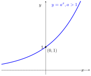
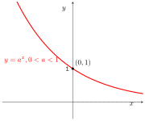
\(\displaystyle \bullet\) សមីការអុិចស៉្បូណង់ស្យែល
✎ \(\displaystyle a^x = a^y \quad \iff \quad x = y\)
✎ \(\displaystyle a^{u(x)} = a^{v(x)} \iff u(x) = v(x)\)
✎ \(\displaystyle [f(x)]^{u(x)} = [f(x)]^{v(x)}\)
\(\displaystyle \quad \iff \begin{cases} f(x) > 0 \\ [f(x) - 1][u(x) - v(x)] = 0 \end{cases}\)
\(\displaystyle \bullet\) វិសមីការអុិចស៉្បូណង់ស្យែល
១. បើ \(\displaystyle a > 1\)
| ✎ \(\displaystyle a^x \geq a^y \Leftrightarrow x \geq y\) | ✎ \(\displaystyle a^x > a^y \Leftrightarrow x > y\) |
| ✎ \(\displaystyle a^x \leq a^y \Leftrightarrow x \leq y\) | ✎ \(\displaystyle a^x < a^y \Leftrightarrow x < y\) |
២. បើ \(\displaystyle 0 < a < 1\)
| ✎ \(\displaystyle a^x \geq a^y \Leftrightarrow x \leq y\) | ✎ \(\displaystyle a^x > a^y \Leftrightarrow x < y\) |
| ✎ \(\displaystyle a^x \leq a^y \Leftrightarrow x \geq y\) | ✎ \(\displaystyle a^x < a^y \Leftrightarrow x > y\) |
៣. ដូចគ្នាដែរចំពោះទំនាក់ទំនង \(\displaystyle f(x)\) និង \(\displaystyle u(x)\) ឬ \(\displaystyle v(x)\) យើងបានដូចខាងក្រោម៖
✎ \(\displaystyle [f(x)]^{u(x)} > [f(x)]^{v(x)}\)
\(\displaystyle \iff \begin{cases} f(x) > 0 \\ [f(x) - 1][u(x) - v(x)] > 0 \end{cases}\)
✎ \(\displaystyle [f(x)]^{u(x)} < [f(x)]^{v(x)}\)
\(\displaystyle \iff \begin{cases} f(x) > 0 \\ [f(x) - 1][u(x) - v(x)] < 0 \end{cases}\)
\(\displaystyle \bullet\) អនុវត្តអនុគមន៍អុិចស៉្បួណង់ស្យែល
១. តាង \(\displaystyle P\) ជាប្រាក់ដើម \(\displaystyle i\) ជាអត្រាការប្រាក់ប្រចាំឆ្នាំ \(\displaystyle t\) ជាចំនួនឆ្នាំ គេបានប្រាក់សរុបគឺ \(\displaystyle A = P(1 + i)^t\) ( ប្រើបានចំពោះប្រាក់ទូទាត់ 1 ឆ្នាំម្តង ) ។
២. បើ \(\displaystyle n\) ជាចំនួនដងនៃការទូទាត់ការប្រាក់ក្នុងមួយឆ្នាំ គេបានរូបមន្ត \(\displaystyle A = P\left(1 + \frac{i}{n}\right)^{nt}\) ។
\(\displaystyle \bullet\) អនុគមន៍ច្រាស
បើ \(\displaystyle (a, b)\) ផ្ទៀងផ្ទាត់ \(\displaystyle y = f(x)\) ហើយ \(\displaystyle (b, a)\) ផ្ទៀងផ្ទាត់ \(\displaystyle f^{-1}(x)\) នោះ \(\displaystyle f^{-1}(x)\) ជាអនុគមន៍ច្រាសនៃអនុគមន៍ \(\displaystyle f(x)\)
\(\displaystyle \bullet\) អនុគមន៍លោការីត
បើ \(\displaystyle y = a^x\) នោះគេបាន \(\displaystyle x = \log_a y \ , \ y > 0 \ , \ a > 0 \ , \ a \neq 1\) ហើយ \(\displaystyle f(x) = a^x\) មានអនុគមន៍ច្រាស \(\displaystyle f^{-1}(x) = \log_a x\) ជាអនុគមន៍លោការីតគោល \(\displaystyle a\) នៃ \(\displaystyle x\) ។
\(\displaystyle \bullet\) ករណី \(\displaystyle a = 10\) គេបាន \(\displaystyle \log_{10} x\) ហៅថា លោការីតទសភាគ គេអាចសរសេរដោយងាយ \(\displaystyle \log x\) ។
\(\displaystyle \bullet\) ករណី \(\displaystyle a = e \ (e \approx 2.7182\dots)\) គេបាន \(\displaystyle \log_e x\) ហៅថា លោការីតធម្មជាតិ ឬ លោការីតនេពែ គេអាចសរសេរដោយងាយ \(\displaystyle \ln x\) ។
\(\displaystyle \bullet\) លក្ខណៈនៃលោការីត
| ១. បើ \(\displaystyle a^x = n\) នោះ \(\displaystyle x = \log_a n\) | |
| ២. \(\displaystyle \log_a b \times \log_b c \times \log_c d \times \log_d a = 1\) | |
| ៣. \(\displaystyle \log_a 1 = 0\) | |
| ៤. \(\displaystyle \log_a b = \frac{1}{\log_b a}\) | |
| ៥. \(\displaystyle \log_b a = \frac{\log_m a}{\log_m b}\) ដែល \(\displaystyle m \neq 1, m > 0\) | |
| ៦. \(\displaystyle \log_a (xy) = \log_a x + \log_a y\) | |
| ៧. \(\displaystyle a^{\log_n b} = b^{\log_n a}\) | |
| ៨. \(\displaystyle \log_a a = 1\) | |
| ៩. \(\displaystyle \log_a \left(\frac{x}{y}\right) = \log_a x - \log_a y\) | |
| ១០. \(\displaystyle \log_{a^\alpha} b = \frac{1}{\alpha} \log_a b\) | |
| ១១. \(\displaystyle \log_a x^n = n \log_a x\) | |
| ១២. \(\displaystyle a^{\log_a x} = x\) | |
| ១៣. \(\displaystyle \log_{a^\alpha} b^\beta = \frac{\beta}{\alpha} \log_a b\) | |
| ១៤. \(\displaystyle \log_a b \times \log_b a = 1\) |
\(\displaystyle \bullet\) ក្រាបនៃអនុគមន៍លោការីត
☞ បើ \(\displaystyle a > 1\) នោះក្រាប \(\displaystyle y = \log_a x\) កើនពីឆ្វេងទៅស្តាំ ។ គេថា \(\displaystyle y = \log_a x\) ជាអនុគមន៍កើន ។
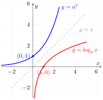
☞ បើ \(\displaystyle 0<a<1\) នោះក្រាប \(\displaystyle y = \log_a x\) ចុះពីឆ្វេងទៅស្តាំ ។ គេថា \(\displaystyle y = \log_a x\) ជាអនុគមន៍ចុះ ។
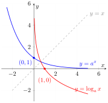
\(\displaystyle \bullet\) សមីការលោការីត
បើ \(\displaystyle a>0, a\neq 1\) នោះសមីការ \(\displaystyle \log_ax=\log_ay\) គេបាន \(\displaystyle x=y\) ។
☞ បើ \(\displaystyle \log_a x_1 < \log_a x_2\) នោះ \(\displaystyle x_1 < x_2\)
☞ បើ \(\displaystyle \log_a x_1 > \log_a x_2\) នោះ \(\displaystyle x_1 > x_2\)
☞ បើ \(\displaystyle \log_a x_1 \le \log_a x_2\) នោះ \(\displaystyle x_1 \le x_2\)
☞ បើ \(\displaystyle \log_a x_1 \ge \log_a x_2\) នោះ \(\displaystyle x_1 \ge x_2\)
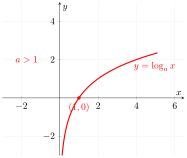
☞ បើ \(\displaystyle \log_a x_1 < \log_a x_2\) នោះ \(\displaystyle x_1 > x_2\)
☞ បើ \(\displaystyle \log_a x_1 > \log_a x_2\) នោះ \(\displaystyle x_1 < x_2\)
☞ បើ \(\displaystyle \log_a x_1 \le \log_a x_2\) នោះ \(\displaystyle x_1 \ge x_2\)
☞ បើ \(\displaystyle \log_a x_1 \ge \log_a x_2\) នោះ \(\displaystyle x_1 \le x_2\)
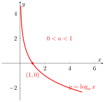
\(\displaystyle \bullet\) អនុវត្តលើអនុគមន៍លោការីត
☞ តាង \(\displaystyle P\) ជាប្រាក់ដើម \(\displaystyle i\) ជាអត្រាការប្រាក់ប្រចាំឆ្នាំ \(\displaystyle t\) ជាចំនួនឆ្នាំ គេបានប្រាក់សរុបគឺ \(\displaystyle A = P(1 + i)^t\) (ប្រើបានចំពោះប្រាក់ទូទាត់១ឆ្នាំម្តង)
☞ បើ \(\displaystyle n\) ជាចំនួនដងនៃការទូទាត់ការប្រាក់ក្នុងមួយឆ្នាំគេបានរូបមន្ត \(\displaystyle A = P\left(1 + \frac{i}{n}\right)^{nt}\) ។
អនុគមន៍ត្រីកោណមាត្រ
\(\displaystyle \bullet\) ការកំណត់មុំមានទិសដៅ
☞ \(\displaystyle \overrightarrow{OP_0}\) និង \(\displaystyle \overrightarrow{OP}\) ជាពីរវ៉ិចទ័រដែលកំណត់បានមុំ \(\displaystyle \alpha + k \times 360^\circ\) , \(\displaystyle k \in \mathbb{Z}\) ដែល \(\displaystyle k\) ជាចំនួនជុំ ។
☞ មុំ \(\displaystyle \alpha\) និង \(\displaystyle \alpha + 360^\circ\) មានរង្វាស់ខុសគ្នា តែមានវ៉ិចទ័រគល់ និង វ៉ិចទ័រចុងដូចគ្នា ។
\(\displaystyle \bullet\) រង្វាស់មុំគិតជារ៉ាដ្យង់
1 រ៉ាដ្យង់ គឺ ជាវាស់មុំដែលស្ទាក់ធ្នូមួយមានប្រវែងស្មើនឹងកាំនៃរង្វង់ ហើយគេកំណត់សរសេរដោយ \(\displaystyle 1\,\text{rd}\) ។
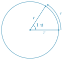
☞ \(\displaystyle 360^\circ = 2\pi\) រ៉ាដ្យង់ និង \(\displaystyle 180^\circ = \pi\) រ៉ាដ្យង់ ។
☞ \(\displaystyle 1^\circ = \frac{\pi}{180}\) \(\displaystyle rd\) និង \(\displaystyle 1rd = \left(\frac{180^\circ}{\pi}\right)\) ។
\(\displaystyle \left(\overrightarrow{OP_0} \, , \, \overrightarrow{OP}\right) = \alpha + 2k\pi\) , \(\displaystyle k \in \mathbb{Z}\) ដែល \(\displaystyle k\) ជាចំនួនជុំ ។
☞ ដើម្បីបំប្លែងពីដឺក្រេទៅរ៉ាដ្យង់ គ្រាន់តែគុណនឹង \(\displaystyle \frac{\pi}{180}\) ។
☞ ដើម្បីបំប្លែងពីរ៉ាដ្យង់ទៅដឺក្រេ គ្រាន់តែគុណនឹង \(\displaystyle \frac{180}{\pi}\) ។
\(\displaystyle \bullet\) សុីនុស កូសុីនុស តង់សង់ និងកូតង់សង់
☞ \(\displaystyle \sin \alpha = \frac{\text{ជ្រុងឈម}\rule[-0.5em]{0pt}{1.55em}}{\text{អុីប៉ូតែនុស}\rule[-0.5em]{0pt}{1.55em}} = \frac{BC}{AC}\)
☞ \(\displaystyle \cos \alpha = \frac{\text{ជ្រុងជាប់}\rule[-0.5em]{0pt}{1.55em}}{\text{អុីប៉ូតែនុស}\rule[-0.5em]{0pt}{1.55em}} = \frac{AB}{AC}\)
☞ \(\displaystyle \tan \alpha = \frac{\text{ជ្រុងឈម}\rule[-0.5em]{0pt}{1.55em}}{\text{ជ្រុងជាប់}\rule[-0.5em]{0pt}{1.55em}} = \frac{BC}{AB}\)
☞ \(\displaystyle \cot \alpha = \frac{\text{ជ្រុងជាប់}\rule[-0.5em]{0pt}{1.55em}}{\text{ជ្រុងឈម}\rule[-0.5em]{0pt}{1.55em}} = \frac{AB}{BC}\)
☞ \(\displaystyle \sin \theta = \frac{OQ}{OP} = \frac{y}{r}\)
☞ \(\displaystyle \cos \theta = \frac{OP'}{OP} = \frac{x}{r}\)
☞ \(\displaystyle \tan \theta = \frac{\sin \theta}{\cos \theta} = \frac{y}{x}\)
☞ \(\displaystyle \cot \theta = \frac{\cos \theta}{\sin \theta} = \frac{x}{y}\)
☞ អ័ក្ស \(\displaystyle \overrightarrow{yy'}\) ហៅថា អ័ក្សស៊ីនុស
☞ អ័ក្ស \(\displaystyle \overrightarrow{uu'}\) ហៅថា អ័ក្សតង់សង់
☞ អ័ក្ស \(\displaystyle \overrightarrow{xx'}\) ហៅថា អ័ក្សកូស៊ីនុស
☞ អ័ក្ស \(\displaystyle \overrightarrow{vv'}\) ហៅថា អ័ក្សកូតង់សង់
ជាទូទៅ៖ គេបានតាងតម្លៃអនុ.ត្រីកោណមាត្រពី \(\displaystyle 0^{\circ}\) ដល់ \(\displaystyle 360^{\circ}\) ៖
| កាដ្រង់ | ដឺក្រេ | រ៉ាដ្យង់ | \(\displaystyle \sin\) | \(\displaystyle \cos\) | \(\displaystyle \tan\) | \(\displaystyle \cot\) |
| \(\displaystyle 0^\circ\) | \(\displaystyle 0\,rd\) | \(\displaystyle 0\) | \(\displaystyle 1\) | \(\displaystyle 0\) | \(\displaystyle \infty\) | |
| \(\displaystyle 30^\circ\) | \(\displaystyle \frac{\pi}{6}\) | \(\displaystyle \frac{1}{2}\) | \(\displaystyle \frac{\sqrt{3}}{2}\) | \(\displaystyle \frac{\sqrt{3}}{3}\) | \(\displaystyle \sqrt{3}\) | |
| \(\displaystyle 45^\circ\) | \(\displaystyle \frac{\pi}{4}\) | \(\displaystyle \frac{\sqrt{2}}{2}\) | \(\displaystyle \frac{\sqrt{2}}{2}\) | \(\displaystyle 1\) | \(\displaystyle 1\) | |
| \(\displaystyle 60^\circ\) | \(\displaystyle \frac{\pi}{3}\) | \(\displaystyle \frac{\sqrt{3}}{2}\) | \(\displaystyle \frac{1}{2}\) | \(\displaystyle \sqrt{3}\) | \(\displaystyle \frac{\sqrt{3}}{3}\) | |
| កាដ្រង់ទី I | \(\displaystyle 90^\circ\) | \(\displaystyle \frac{\pi}{2}\) | \(\displaystyle 1\) | \(\displaystyle 0\) | \(\displaystyle \infty\) | \(\displaystyle 0\) |
| \(\displaystyle 120^\circ\) | \(\displaystyle \frac{2\pi}{3}\) | \(\displaystyle \frac{\sqrt{3}}{2}\) | \(\displaystyle -\frac{1}{2}\) | \(\displaystyle -\sqrt{3}\) | \(\displaystyle -\frac{\sqrt{3}}{3}\) | |
| \(\displaystyle 135^\circ\) | \(\displaystyle \frac{3\pi}{4}\) | \(\displaystyle \frac{\sqrt{2}}{2}\) | \(\displaystyle -\frac{\sqrt{2}}{2}\) | \(\displaystyle -1\) | \(\displaystyle -1\) | |
| \(\displaystyle 150^\circ\) | \(\displaystyle \frac{5\pi}{6}\) | \(\displaystyle \frac{1}{2}\) | \(\displaystyle -\frac{\sqrt{3}}{2}\) | \(\displaystyle -\frac{\sqrt{3}}{3}\) | \(\displaystyle -\sqrt{3}\) | |
| កាដ្រង់ទី II | \(\displaystyle 180^\circ\) | \(\displaystyle \pi\) | \(\displaystyle 0\) | \(\displaystyle -1\) | \(\displaystyle 0\) | \(\displaystyle \infty\) |
| \(\displaystyle 210^\circ\) | \(\displaystyle \frac{7\pi}{6}\) | \(\displaystyle -\frac{1}{2}\) | \(\displaystyle -\frac{\sqrt{3}}{2}\) | \(\displaystyle \frac{\sqrt{3}}{3}\) | \(\displaystyle -\sqrt{3}\) | |
| \(\displaystyle 225^\circ\) | \(\displaystyle \frac{5\pi}{4}\) | \(\displaystyle -\frac{\sqrt{2}}{2}\) | \(\displaystyle -\frac{\sqrt{2}}{2}\) | \(\displaystyle 1\) | \(\displaystyle 1\) | |
| \(\displaystyle 240^\circ\) | \(\displaystyle \frac{4\pi}{3}\) | \(\displaystyle -\frac{\sqrt{3}}{2}\) | \(\displaystyle -\frac{1}{2}\) | \(\displaystyle \sqrt{3}\) | \(\displaystyle \frac{\sqrt{3}}{3}\) | |
| កាដ្រង់ទី III | \(\displaystyle 270^\circ\) | \(\displaystyle \frac{3\pi}{2}\) | \(\displaystyle -1\) | \(\displaystyle 0\) | \(\displaystyle \infty\) | \(\displaystyle 0\) |
| \(\displaystyle 300^\circ\) | \(\displaystyle \frac{5\pi}{3}\) | \(\displaystyle -\frac{\sqrt{3}}{2}\) | \(\displaystyle \frac{1}{2}\) | \(\displaystyle -\sqrt{3}\) | \(\displaystyle -\frac{\sqrt{3}}{3}\) | |
| \(\displaystyle 315^\circ\) | \(\displaystyle \frac{7\pi}{4}\) | \(\displaystyle -\frac{\sqrt{2}}{2}\) | \(\displaystyle \frac{\sqrt{2}}{2}\) | \(\displaystyle -1\) | \(\displaystyle -1\) | |
| កាដ្រង់ទី IV | \(\displaystyle 330^\circ\) | \(\displaystyle \frac{11\pi}{6}\) | \(\displaystyle -\frac{1}{2}\) | \(\displaystyle \frac{\sqrt{3}}{2}\) | \(\displaystyle -\frac{\sqrt{3}}{3}\) | \(\displaystyle -\sqrt{3}\) |
\(\displaystyle \bullet\) សញ្ញានៃអនុគមន៍ត្រីកោណមាត្រ
| កាដ្រង់ទី I | កាដ្រង់ទី II | កាដ្រង់ទី III | កាដ្រង់ទី IV | |
| \(\displaystyle \sin\) | \(\displaystyle +\) | \(\displaystyle +\) | \(\displaystyle -\) | \(\displaystyle -\) |
| \(\displaystyle \cos\) | \(\displaystyle +\) | \(\displaystyle -\) | \(\displaystyle -\) | \(\displaystyle +\) |
| \(\displaystyle \tan\) | \(\displaystyle +\) | \(\displaystyle -\) | \(\displaystyle +\) | \(\displaystyle -\) |
| \(\displaystyle \cot\) | \(\displaystyle +\) | \(\displaystyle -\) | \(\displaystyle +\) | \(\displaystyle -\) |
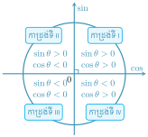
| ១. \(\displaystyle \sin^2 \theta + \cos^2 \theta = 1\) | ២. \(\displaystyle 1 + \tan^2 \theta = \frac{1}{\cos^2 \theta}\) |
| ៣. \(\displaystyle 1 + \cot^2 \theta = \frac{1}{\sin^2 \theta}\) | ៤. \(\displaystyle \tan\theta=\dfrac{\sin\theta}{\cos\theta}\) |
| ៥. \(\displaystyle \cot\theta=\dfrac{\cos\theta}{\tan\theta}\) | ៦. \(\displaystyle \tan\theta\cdot\cot\theta=1\) |
\(\displaystyle \bullet\) អនុគមន៍ត្រីកោណមាត្រនៃមុំ \(\displaystyle \theta\) និង \(\displaystyle \theta+2k\pi\)
☞ \(\displaystyle \sin(\theta + 2k\pi) = \sin \theta\)
☞ \(\displaystyle \cos(\theta + 2k\pi) = \cos \theta\)
☞ \(\displaystyle \tan(\theta + 2k\pi) = \tan \theta\)
☞ \(\displaystyle \cot(\theta + 2k\pi) = \cot \theta\) ដែល \(\displaystyle k \in \mathbb{Z}\)
ចំពោះ \(\displaystyle k \in \mathbb{Z}\) គេបាន \(\displaystyle \tan(\theta + k\pi) = \tan \theta\) និង \(\displaystyle \cot(\theta + k\pi) = \cot \theta\) ។
\(\displaystyle \bullet\) មុំផ្ទុយគ្នា \(\displaystyle \theta\) និង \(\displaystyle -\theta\)
មុំផ្ទុយគ្នា \(\displaystyle \theta\) និង \(\displaystyle -\theta\) គឺជាមុំពីរផ្ទុយគ្នា កាលណាផលបូករង្វាស់មុំទាំងពីរស្មើទសូន្យតាម \(\displaystyle 2\pi\) ។
☞ \(\displaystyle \sin(-\theta) = -\sin \theta\)
☞ \(\displaystyle \cos(-\theta) = \cos \theta\)
☞ \(\displaystyle \tan(-\theta) = -\tan(\theta)\)
☞ \(\displaystyle \cot(-\theta) = -\cot(\theta)\)
\(\displaystyle \bullet\) មុំបំពេញ \(\displaystyle \dfrac{\pi}{2}-\theta\) និង \(\displaystyle \theta\)
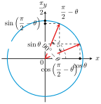
☞ \(\displaystyle \sin\left(\frac{\pi}{2} - \theta\right) = \cos \theta\)☞ \(\displaystyle \cos\left(\frac{\pi}{2} - \theta\right) = \sin \theta\)
☞ \(\displaystyle \tan\left(\frac{\pi}{2} - \theta\right) = \cot \theta\)
☞ \(\displaystyle \cot\left(\frac{\pi}{2} - \theta\right) = \tan \theta\)
\(\displaystyle \bullet\) មុំបន្ថែម \(\displaystyle \pi-\theta\) និង \(\displaystyle \theta\)
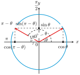
\(\displaystyle \bullet\) មុំដែលមានផលសងស្មើ \(\displaystyle \pi\)
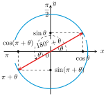
\(\displaystyle \bullet\) មុំដែលមានផលសងស្មើ \(\displaystyle \dfrac{\pi}{2}\)
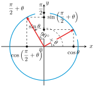
\(\displaystyle \bullet\) ដែនកំណត់
☞ អនុគមន៍ \(\displaystyle f(x) = \sin x\) កំណត់ចំពោះគ្រប់ \(\displaystyle x \in \mathbb{R}\) គេបាន \(\displaystyle D = \mathbb{R}\) ។
☞ អនុគមន៍ \(\displaystyle f(x) = \cos x\) កំណត់ចំពោះគ្រប់ \(\displaystyle x \in \mathbb{R}\) គេបាន \(\displaystyle D = \mathbb{R}\) ។
☞ អនុគមន៍ \(\displaystyle f(x) = \tan x\) កំណត់បាន
លុះត្រាតែ \(\displaystyle \cos x \neq 0\) គេបាន
\(\displaystyle x \neq (2k + 1)\frac{\pi}{2}\) ដែល \(\displaystyle k \in \mathbb{Z}\) ។
ដូចនេះ \(\displaystyle D = \mathbb{R} \setminus \left\{(2k + 1)\frac{\pi}{2}\right\}\) ។
☞ អនុគមន៍ \(\displaystyle f(x) = \cot x\) កំណត់បានលុះត្រាតែ \(\displaystyle \sin x \neq 0\) គេបាន \(\displaystyle x \neq k\pi\) ដែល \(\displaystyle k \in \mathbb{Z}\) ។ ដូចនេះ \(\displaystyle D = \mathbb{R} \setminus \{k\pi\}\) ។
\(\displaystyle \bullet\) ខួបនៃអនុគមន៍
☞ គេមានអនុគមន៍ \(\displaystyle f\) ដែលមានដែនកំណត់ \(\displaystyle D\) ។ គេថា \(\displaystyle f\) ជាអនុគមន៍មានខួប \(\displaystyle p\) លុះត្រាតែ \(\displaystyle p\) ជាចំនួនពិតវិជ្ជមានតូចបំផុតដែល \(\displaystyle \forall x \in D\) គេបាន \(\displaystyle f(x + p) = f(x)\) ។ បើ \(\displaystyle f\) ជាអនុគមន៍ខួបនោះគេបាន៖
\(\displaystyle f(x) = f(x + p) = f[(x + p) + p] = f(x + 2p) = \dots\)
\(\displaystyle f(x) = f(x - p) = f[(x - p) - p] = f(x - 2p) = \dots\)
\(\displaystyle \bullet\) ភាពគូ និងសេសនៃអនុគមន៍
គេមានអនុគមន៍ \(\displaystyle f\) ដែលមានដែនកំណត់ \(\displaystyle \mathbb{D}\) ។
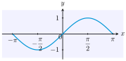
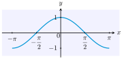
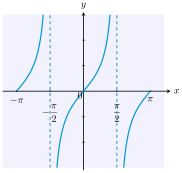
\(\displaystyle \bullet\) រូបមន្តផលបូក និងផលដក
\(\displaystyle \bullet\) រូបមន្តមុំឌុប
\(\displaystyle \bullet\) រូបមន្តមុំឌុប
☞ \(\displaystyle \sin \alpha = 2 \sin \dfrac{\alpha}{2} \cos \dfrac{\alpha}{2}\)
☞ \(\displaystyle \sin^2 \dfrac{\alpha}{2} = \dfrac{1 - \cos \alpha}{2}\)
☞ \(\displaystyle \cos^2 \dfrac{\alpha}{2} = \dfrac{1 + \cos \alpha}{2}\)
☞ \(\displaystyle \tan^2 \dfrac{\alpha}{2} = \dfrac{1 - \cos \alpha}{1 + \cos \alpha}\)
☞ \(\displaystyle \cos \alpha = \dfrac{1 - t^2}{1 + t^2}\)
☞ \(\displaystyle \sin \alpha = \dfrac{2t}{1 + t^2}\)
☞ \(\displaystyle \tan \alpha = \dfrac{2t}{1 - t^2}\)
\(\displaystyle \bullet\) រូបមន្តបម្លែងពីផលបូក និងដកទៅជាផលគុណ
☞ \(\displaystyle \cos \alpha + \cos \beta = 2 \cos \dfrac{\alpha + \beta}{2} \cos \dfrac{\alpha - \beta}{2}\)
☞ \(\displaystyle \sin \alpha + \sin \beta = 2 \sin \dfrac{\alpha + \beta}{2} \cos \dfrac{\alpha - \beta}{2}\)
☞ \(\displaystyle \cos \alpha - \cos \beta = -2 \sin \dfrac{\alpha - \beta}{2} \sin \dfrac{\alpha + \beta}{2}\)
☞ \(\displaystyle \sin \alpha - \sin \beta = 2 \sin \dfrac{\alpha - \beta}{2} \cos \dfrac{\alpha + \beta}{2}\)
\(\displaystyle \bullet\) រូបមន្តបម្លែងពីផលគុណទៅជាផលបូក និងដក
☞ \(\displaystyle \cos \alpha \cos \beta = \dfrac{1}{2}[\cos(\alpha + \beta) + \cos(\alpha - \beta)]\)
☞ \(\displaystyle \sin \alpha \cos \beta = \dfrac{1}{2}[\sin(\alpha + \beta) + \sin(\alpha - \beta)]\)
☞ \(\displaystyle \sin \alpha \sin \beta = \dfrac{1}{2}[\cos(\alpha - \beta) - \cos(\alpha + \beta)]\)
☞ \(\displaystyle \sin \beta \cos \alpha = \dfrac{1}{2}[\sin(\alpha + \beta) - \sin(\alpha - \beta)]\)
បើពីរចំនួន \(\displaystyle x\) និង \(\displaystyle y\) មានកូស៊ីនុសដូចគ្នា \(\displaystyle \cos x = \cos y\) លុះត្រាតែ \(\displaystyle x = y + 2k\pi\) ឬ \(\displaystyle x = -y + 2k\pi\) ដែល \(\displaystyle k \in \mathbb{Z}\) ។
បើ \(\displaystyle x\) និង \(\displaystyle y\) ជាពីរចំនួនពិតមានស៊ីនុសដូចគ្នា \(\displaystyle \sin x = \sin y\) លុះត្រាតែ \(\displaystyle x = y + 2k\pi\) ឬ \(\displaystyle x = \pi - y + 2k\pi\) ដែល \(\displaystyle k \in \mathbb{Z}\) ។
\(\displaystyle \left\{ \begin{aligned} & \cos x = 0 \Longrightarrow x = \frac{\pi}{2} + k\pi \quad , \qquad k \in \mathbb{Z} \\[0.1cm] & \cos x = 1 \Longrightarrow x = 2k\pi \qquad , \qquad k \in \mathbb{Z} \\[0.1cm] & \cos x = -1 \Longrightarrow x = \pi + 2k\pi \quad , k \in \mathbb{Z} \end{aligned} \right.\)
\(\displaystyle \bullet\) សមីការ \(\displaystyle \sin x = \sin \alpha\) មានចម្លើយពីរគឺ
\(\displaystyle \begin{cases}
x = \alpha + 2k\pi \\
x = \pi - \alpha + 2k\pi
\end{cases}, \quad k \in \mathbb{Z}\)
\(\displaystyle \bullet\) សមីការ \(\displaystyle \sin u(x) = \sin v(x)\) មានចម្លើយគឺ
\(\displaystyle \begin{cases}
u(x) = v(x) + 2k\pi \\
u(x) = \pi - v(x) + 2k\pi
\end{cases}, k \in \mathbb{Z}\)
\(\displaystyle \left\{ \begin{aligned} & \sin x = 0 \Longrightarrow x = k\pi \quad , \qquad \qquad k \in \mathbb{Z} \\[0.1cm] & \sin x = 1 \Longrightarrow x = \dfrac{\pi}{2}+2k\pi , \qquad k \in \mathbb{Z} \\[0.1cm] & \sin x = -1 \Longrightarrow x = -\dfrac{\pi}{2} + 2k\pi,~ k \in \mathbb{Z} \end{aligned} \right.\)
ចំពោះ \(\displaystyle a \in [-1, 1]\) វិសមីការ \(\displaystyle \cos x \ge a\) មានសំណុំចម្លើយ
ចំពោះ \(\displaystyle a \in [-1, 1]\) វិសមីការ \(\displaystyle \cos x \le a\) មានសំណុំចម្លើយ
ចំពោះ \(\displaystyle a \in [-1, 1]\) វិសមីការ \(\displaystyle \sin x \ge a\) មានសំណុំចម្លើយ
ចំពោះ \(\displaystyle a \in [-1, 1]\) វិសមីការ \(\displaystyle \sin x \le a\) មានសំណុំចម្លើយ
វិសមីការ \(\displaystyle \tan x \ge a\) មានសំណុំចម្លើយ
វិសមីការ \(\displaystyle \tan x \le a\) មានសំណុំចម្លើយ
វិសមីការ \(\displaystyle \cot x \ge a\) មានសំណុំចម្លើយ
វិសមីការ \(\displaystyle \cot x \le a\) មានសំណុំចម្លើយ
ដើម្បីដោះស្រាយសមីការមានរាង
\(\displaystyle a \cos x + b \sin x = c\) គេមានពីររបៀបក្នុងការដោះស្រាយគឺ ៖
ប្រយ័ត្ន ៖ ដោះស្រាយតាមរបៀបទី២នេះ អាចបាត់ឫស \(\displaystyle x = \pi + 2k\pi\) ដូចនេះ ដំបូងត្រូវពិនិត្យថា \(\displaystyle x = \pi + 2k\pi\) ជាឫសនៃសមីការដឺក្រេទី \(\displaystyle 2\) នៃសមីការ \(\displaystyle a \cos x + b \sin x = c\) ឬទេ ?
ដើម្បីដោះស្រាយសមីការបែបនេះគេត្រូវ ៖
ដើម្បីដោះស្រាយសមីការបែបនេះ គេត្រូវចែកអង្គទាំងពីរនៃសមីការនឹង \(\displaystyle \cos^2 x \neq 0 \ ,\)
\(\displaystyle \ x \neq \frac{\pi}{2} + k\pi\) ។ គេបានសមីការ \(\displaystyle a \tan^2 x + b \tan x + c = 0\) រួចដោះស្រាយតាមរបៀបខាងលើ ។
ដើម្បីដោះស្រាយវិសមីការដែលមានរាង
\(\displaystyle \sin x \geq a \ , \ \cos x < a \ , \ \tan x < a \ , \ \cot x < a \ , \ \cdots\) គេត្រូវ ៖
លីមីតនិងដេរីវេ
បើ \(\displaystyle x\) ខិតជិត \(\displaystyle a\) ហើយអនុគមន៍ \(\displaystyle y = f(x)\) ខិតទៅជិត \(\displaystyle \ell\) ណាមួយនោះ គេកំណត់សរសេរ \(\displaystyle \lim_{x \to a} f(x) = \ell\) ។
\(\displaystyle \bullet\) ប្រមាណវិធីលើលីមីត
\(\displaystyle \bullet\) លីមីតរាងមិនកំណត់ \(\displaystyle \dfrac{0}{0}\)
បើ \(\displaystyle \frac{f(x)}{g(x)}\) ដែល \(\displaystyle g(x) \neq 0\) ជាប្រភាគសនិទាន នោះ ៖ \(\displaystyle \lim_{x \to x_0} \frac{f(x)}{g(x)} = \frac{f(x_0)}{g(x_0)}; \quad g(x_0) \neq 0\) ។
បើ \(\displaystyle \lim_{x \to a} \frac{f(x)}{g(x)}\) ហើយតម្លៃនៃ \(\displaystyle \lim_{x \to a} f(x) = f(a) = 0\) និង \(\displaystyle \lim_{x \to a} g(x) = g(a) = 0\) នោះលីមីត \(\displaystyle \lim_{x \to a} \frac{f(x)}{g(x)}\) មានរាងមិនកំណត់ \(\displaystyle \frac{0}{0}\) នោះគេត្រូវគណនាដូចជំហានខាងក្រោម ៖
\(\displaystyle \bullet\) លីមីតអនន្តនៃអនុគមន៍
☞ \(\displaystyle \lim_{x \to \pm\infty} ax^2 =
\begin{cases}
+\infty & \text{បើ } a > 0 \\
-\infty & \text{បើ } a < 0
\end{cases} \quad ។\)
☞ \(\displaystyle \lim_{x \to \pm\infty} \frac{a}{x} = 0 \quad \text{ចំពោះគ្រប់ } a \in \mathbb{R}\)
\(\displaystyle \bullet\) លីមីតរាងមិនកំណត់ \(\displaystyle \infty-\infty\)
☞ បើលីមីតនៃពហុធា មានរាងមិនកំណត់ \(\displaystyle +\infty - \infty\) ឬ \(\displaystyle -\infty + \infty\) នៅត្រង់អនន្ត នោះគេត្រូវ ៖
☞ លីមីតនៃពហុធា នៅត្រង់អនន្ត គឺគណនាលីមីតដែលទិន្នន័យដឺក្រេធំជាងគេ
\(\displaystyle \bullet\) លីមីតរាងមិនកំណត់ \(\displaystyle \dfrac{\infty}{\infty}\)
☞ បើលីមីតនៃប្រភាគសនិទានមានរាងមិនកំណត់ \(\displaystyle \frac{\infty}{\infty}\) នៅត្រង់អនន្ត នោះគេត្រូវ ៖
☞ លីមីតនៃប្រភាគសនិទាននៅត្រង់អនន្ត គឺទាក់ទងនឹងផលធៀបរវាងលីមីតនៃតួដែលមានដឺក្រេធំជាងគេនៅភាគយកនិងលីមីតនៃតួដែលមានដឺក្រេធំជាងគេនៅភាគបែង ។
បើ \(\displaystyle x\) ប្រែប្រួលពី \(\displaystyle a\) ទៅ \(\displaystyle b\) នោះ៖
ហៅថាអត្រាបម្រែបម្រួលមធ្យម ។
ដេរីវេ \(\displaystyle f'(a)\) នៃអនុគមន៍ \(\displaystyle y = f(x)\) នៅត្រង់ \(\displaystyle x = a\) កំណត់ដោយ៖
ឬអាចសរសេរបានថា៖
ដែល \(\displaystyle x = a + h\) ឬ \(\displaystyle h = x - a\) ។ បើ \(\displaystyle x \to a\) នោះ \(\displaystyle h \to 0\)។
ដេរីវេ \(\displaystyle f'(x)\) នៃអនុគមន៍ \(\displaystyle f(x)\) កំណត់ដោយ៖
និមិត្តសញ្ញាដែលគេប្រើសម្រាប់ដេរីវេ៖
បើអនុគមន៍ \(\displaystyle y = f(x)\) មានដេរីវេទី ១ តាងដោយ \(\displaystyle f'(x)\) ហើយ \(\displaystyle f'(x)\) មានដេរីវេម្តងទៀត នោះដេរីវេនៃ \(\displaystyle f'(x)\) ហៅថា ដេរីវេទី ២ នៃអនុគមន៍ \(\displaystyle f(x)\) ដែលតាងដោយ \(\displaystyle f''(x)\)៖
| តារាងដេរីវេនៃអនុគមន៍ | |
| អនុគមន៍ \(\displaystyle f(x)\) | ដេរីវេ \(\displaystyle f'(x)\) |
| 1. \(\displaystyle f(x) = a\) | \(\displaystyle f'(x) = 0\) |
| 2. \(\displaystyle f(x) = ax\) | \(\displaystyle f'(x) = a\) |
| 3. \(\displaystyle f(x) = ax^n\) | \(\displaystyle f'(x) = a \cdot n x^{n-1}\) |
| 4. \(\displaystyle f(x) = a\sqrt{x}\) | \(\displaystyle f'(x) = \dfrac{a}{2\sqrt{x}}\) |
| 5. \(\displaystyle f(x) = a\sqrt[n]{x}\) | \(\displaystyle f'(x) = \dfrac{a}{n\sqrt[n]{x^{n-1}}}\) |
| 6. \(\displaystyle f(x) = ae^x\) | \(\displaystyle f'(x) = ae^x\) |
| 7. \(\displaystyle f(x) = a\ln x\) | \(\displaystyle f'(x) = \dfrac{a}{x}\) |
| 8. \(\displaystyle f(x) = a\log_b x\) | \(\displaystyle f'(x) = \dfrac{a}{x \ln b}\) |
| 9. \(\displaystyle f(x) = a \sin x\) | \(\displaystyle f'(x) = a \cos x\) |
| 10. \(\displaystyle f(x) = a \cos x\) | \(\displaystyle f'(x) = -a \sin x\) |
| 11. \(\displaystyle f(x)=a\sin u\) | \(\displaystyle f'(x)=a\cdot u'\cos u\) |
| 12. \(\displaystyle f(x) = a \cos u\) | \(\displaystyle f'(x) = -a \cdot u' \sin u\) |
| ច្បាប់នៃដេរីវេ (Derivative Rules) | |
| ដេរីវេផលគុណ | \(\displaystyle (uv)' = u'v + uv'\) |
| ដេរីវេផលចែក | \(\displaystyle \left(\dfrac{u}{v}\right)' = \dfrac{u'v - uv'}{v^2}\) |
| ដេរីវេបណ្ដាក់ | \(\displaystyle (f(g(x)))' = f'(g(x)) \cdot g'(x)\) |
☞ សមីការបន្ទាត់ប៉ះទៅនឹងក្រាបនៃអនុគមន៍ \(\displaystyle y = f(x)\) នៅត្រង់ចំណុចដែលមានអាប់ស៊ីស \(\displaystyle x = a\) កំណត់ដោយ៖
☞ ជំហានក្នុងការរកបន្ទាត់ប៉ះ៖
☞ ឱ្យ \(\displaystyle f\) ជាអនុគមន៍ជាប់លើចន្លោះ \(\displaystyle I\)៖
ចំណាំ: ចំណុចដែល \(\displaystyle f'(x) = 0\) គឺជាចំណុចអតិបរមា ឬ អប្បបរមា នៃអនុគមន៍។
១. តម្លៃអតិបរមាធៀប មានត្រង់ \(\displaystyle x_0\) លុះត្រាតែ \(\displaystyle f'(x)\) ប្តូរសញ្ញាពី (+) ទៅ (\(\displaystyle -\))៖
២. តម្លៃអប្បបរមាធៀបមានត្រង់ \(\displaystyle x_0\) លុះត្រាតែ \(\displaystyle f'(x)\) ប្តូរសញ្ញាពី (\(\displaystyle -\)) ទៅ (+)៖
ជំហានក្នុងការអនុវត្ត៖
អនុគមន៍ \(\displaystyle f\) មានដេរីវេទី ២ ត្រង់ \(\displaystyle x_0\) ដែល \(\displaystyle f'(x_0) = 0\)៖
ចំណាំ: បើ \(\displaystyle f''(x_0) = 0\) មិនអាចសន្និដ្ឋានបានទេ (ត្រូវត្រឡប់ទៅប្រើតារាងសញ្ញាដេរីវេទី ១)។
ចំណុច \(\displaystyle (x_0, f(x_0))\) ជាចំណុចរបត់ បើ \(\displaystyle f''(x_0) = 0\) ហើយសញ្ញានៃ \(\displaystyle f''(x)\) ប្តូរនៅត្រង់ \(\displaystyle x_0\)៖
សន្និដ្ឋាន: បើ \(\displaystyle f''(x)\) ប្តូរសញ្ញាពី \(\displaystyle +\) ទៅ \(\displaystyle -\) ឬពី \(\displaystyle -\) ទៅ \(\displaystyle +\) នោះ \(\displaystyle x_0\) គឺជាចំណុចរបត់។
ជំហានក្នុងការរក៖
អនុវត្តដេរីវេ៖
អតិបរមាធៀប និងអប្បបរមាធៀប
\(\displaystyle f'(x)=0 \Leftrightarrow 3ax^2+2bx+c=0\) យើងបាន៖
លីមីត
តារាងអរថេរភាព
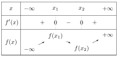
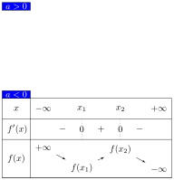
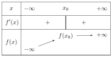
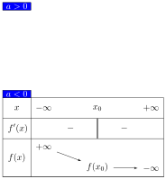
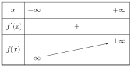
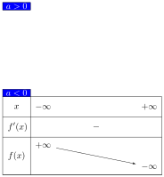
ចំណុចរបត់ និងផ្ចិតឆ្លុះ
ដោយ \(\displaystyle f'(x) = 3ax^2 + 2bx + c\) នោះ \(\displaystyle f''(x) = 6ax + 2b\) បើ \(\displaystyle f''(x) = 0\)
\(\displaystyle \iff 6ax + 2b = 0\)
\(\displaystyle \Longrightarrow x = -\frac{b}{3a}\)
យើងបាន \(\displaystyle I\left(-\frac{b}{3a}, f\left(-\frac{b}{3a}\right)\right)\) ។
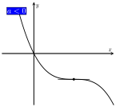
☞ \(\displaystyle f'(x)=0\) មានគ្មានឫស
ទិសដៅអថេរភាព
ដេរីវេនៃ \(\displaystyle f(x)\) កំណត់ដោយ៖
ចំណុចរបត់
ដេរីវេទី២នៃដេរីវេទី១គឺ៖
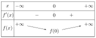
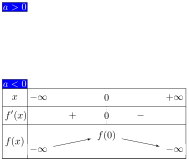
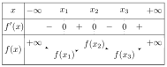
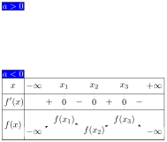
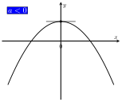
លីមីត និងអាសុីមតូត
ទិសដៅអថេរភាព
☞ ដេរីវេ \(\displaystyle f'(x)=\left( \frac{ax+b}{cx+d} \right)'\)
\(\displaystyle = \frac{a(cx+d) - c(ax+b)}{(cx+d)^2}\)
\(\displaystyle = \frac{ad - bc}{(cx+d)^2}\) សញ្ញានៃ \(\displaystyle f'(x)\) អាស្រ័យលើកន្សោម \(\displaystyle ad - bc\) ។
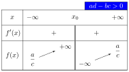
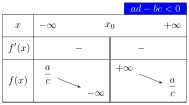
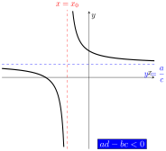
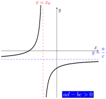
ទិសដៅអថេរភាព
លីមីត និងអាសុីមតូត
☞ លីមីតចុងដែនកំណត់
☞ លីមីតត្រង់អាសុីមតូតឈរ
☞ អាសុីមតូតឈរ និងទ្រេត
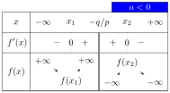
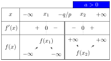
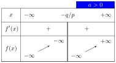
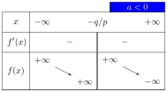
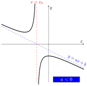
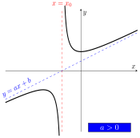
☞ \(\displaystyle f'(x)=0\) គ្មានឫស
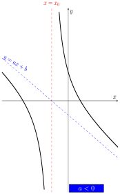
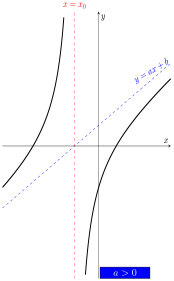
ប្រូបាប
\(\displaystyle \bullet\) គោលការណ៍ផលបូក
គេមានព្រឹត្តិការណ៍ \(\displaystyle A\) និងព្រឹត្តិការណ៍ \(\displaystyle B\)
\(\displaystyle n(A)\) ជាចំនួនលទ្ធផលកើតក្នុងព្រឹត្តិការណ៍ \(\displaystyle A\)
\(\displaystyle n(B)\) ជាចំនួនលទ្ធផលកើតក្នុងព្រឹត្តិការណ៍ \(\displaystyle B\) ។
បើ \(\displaystyle A\) និង \(\displaystyle B\) ជាពីរព្រឹត្តិការណ៍ពីរមិនចុះសម្រុងគ្នា (គ្មានលទ្ធផលណាមួយរួមទេ) នោះចំនួនលទ្ធផលដែលកើតឡើងក្នុងព្រឹត្តិការណ៍ “\(\displaystyle A\) ឬ \(\displaystyle B\)” គឺ
បើ \(\displaystyle A\) និង \(\displaystyle B\) ជាព្រឹត្តិការណ៍ពីរចុះសម្រុងគ្នា (មានលទ្ធផលរួមគ្នា) នោះចំនួនលទ្ធផលដែលកើតឡើងក្នុងព្រឹត្តិការណ៍ “\(\displaystyle A\) ឬ \(\displaystyle B\)” គឺ
\(\displaystyle \bullet\) គោលការណ៍ផលគុណ
គេមានព្រឹត្តិការណ៍ \(\displaystyle A\) កើតឡើង \(\displaystyle m\) របៀប ហើយមានព្រឹត្តិការណ៍ \(\displaystyle B\) កើតឡើង \(\displaystyle n\) របៀប នោះចំនួនលទ្ធផលដែលព្រឹត្តិការណ៍ \(\displaystyle A\) កើតឡើង ហើយ \(\displaystyle B\) កើតឡើងបន្ទាប់ស្មើនឹង \(\displaystyle m \times n\) ។
\(\displaystyle \bullet\) ចម្លាស់ \(\displaystyle n\) ធាតុ
ចម្លាស់នៃ \(\displaystyle n\) ធាតុ គឺជាត្រៀបមានលំដាប់នៃ \(\displaystyle n\) វត្ថុខុសៗគ្នាជាជួរដេក \(\displaystyle n \in \mathbb{N}\) ។ ចំនួនច្បាស់នៃ \(\displaystyle n\) ធាតុស្មើនឹង \(\displaystyle n!\) ។
\(\displaystyle n!\) អានថា \(\displaystyle n\) ហ្វាក់តូរ្យែល
\(\displaystyle n! = n(n - 1)(n - 2) \times \dots \times 4 \times 3 \times 2 \times 1\)
\(\displaystyle \bullet\) ចម្លាស់នៃ \(\displaystyle r\) ធាតុយកចេញពី \(\displaystyle n\) ធាតុ
ចម្លាស់នៃ \(\displaystyle r\) ធាតុយកចេញពី \(\displaystyle n\) ធាតុ គឺជាត្រៀបមានលំដាប់នៃ \(\displaystyle r\) ធាតុខុសៗគ្នាដែលធាតុនីមួយៗយកចេញពី \(\displaystyle n\) ធាតុខុសៗគ្នា ។
(\(\displaystyle n \in \mathbb{N}, r \in \mathbb{N}, r \leq n\)) ។ ចំនួនច្បាស់នៃ \(\displaystyle r\) ធាតុយកចេញពី \(\displaystyle n\) ធាតុគឺ
\(\displaystyle {}_n\mathrm{P}_r = n(n - 1)(n - 2) \dots (n - r + 1)\) ឬ \(\displaystyle {}_n\mathrm{P}_r = \dfrac{n!}{(n - r)!}\) ។
គេអាចប្រើនិមិត្តសញ្ញា \(\displaystyle P(n, r)\) ។
\(\displaystyle \bullet\) ចម្លាស់ច្រំដែល
ចម្លាស់ច្រំដែលនៃ \(\displaystyle r\) ធាតុយកចេញពី \(\displaystyle n\) ធាតុ គឺជាត្រៀបមានលំដាប់នៃ \(\displaystyle r\) ធាតុដែលធាតុនីមួយៗអាចជាធាតុដែលយកចេញពី \(\displaystyle n\) ធាតុខុសគ្នា ។ ចំនួនចម្លាស់ច្រំដែលនៃ \(\displaystyle r\) ធាតុយកចេញពី \(\displaystyle n\) ធាតុស្មើនឹង \(\displaystyle n^r\) ។
\(\displaystyle \bullet\) ចម្លាស់វង់
ចំនួនចម្លាស់វង់នៃ \(\displaystyle n\) ធាតុគឺ \(\displaystyle \dfrac{n!}{n}=(n-1)!\)
\(\displaystyle \bullet\) ចម្លាស់បែងចែកបាន
ចម្លាស់នៃ \(\displaystyle n\) វត្ថុដែលក្នុងនោះមានវត្ថុប្រភេទទី 1, ប្រភេទទី 2, …, ប្រភេទទី \(\displaystyle k\) ហើយវត្ថុប្រភេទនីមួយៗមានចំនួន \(\displaystyle r_1, r_2, \dots, r_k\) រៀងគ្នា \(\displaystyle (r_1 + r_2 + \dots + r_k = n)\) ហៅថា ចម្លាស់នៃវត្ថុដូចៗគ្នា ។
ចំនួនចម្លាស់នៃវត្ថុដូចៗគ្នា កំណត់ដោយ
\(\displaystyle \bullet\) បន្សំនៃ \(\displaystyle r\) ធាតុយកចេញពី \(\displaystyle n\) ធាតុ
បន្សំនៃ \(\displaystyle r\) ធាតុយកពី \(\displaystyle n\) ធាតុ គឺជាការយកព្រមគ្នានូវ \(\displaystyle r\) ធាតុចេញពី \(\displaystyle n\) ធាតុខុសៗគ្នាដោយមិនគិតពីលំដាប់នៃការយកចេញ ។ ចំពោះគ្រប់ \(\displaystyle r \in \mathbb{N}, n \in \mathbb{N}, r \leq n\) ចំនួនបន្សំនៃ \(\displaystyle r\) ធាតុយកពី \(\displaystyle n\) ធាតុគឺ \(\displaystyle {}_n\mathrm{C}_r = \dfrac{{}_n\mathrm{P}_r}{r!} = \dfrac{n!}{(n - r)!r!} \text{ ។}\)
គេអាចសរសេរនិមិត្តសញ្ញាបន្សំដោយ \(\displaystyle C(n, r), \mathrm{C}_r^n\) ឬ \(\displaystyle \binom{n}{r} \text{ ។}\)
\(\displaystyle \bullet\) លក្ខណៈនៃបន្សំ
ចំពោះ \(\displaystyle n\) ជាចំនួនគត់ធម្មជាតិ គេបាន៖
\(\displaystyle \bullet\) ការពន្លាតទ្វេធានៃ \(\displaystyle (1+a)^n\)
☞ ក្នុងការការពន្លាតទ្វេធា \(\displaystyle (1 + a)^n\) ដែល \(\displaystyle n \in \mathbb{N}\) គេបាន
\(\displaystyle (1 + a)^n = {}_n\mathrm{C}_0 + {}_n\mathrm{C}_1 \times a + {}_n\mathrm{C}_2 \times a^2 + \dots\)
\(\displaystyle + {}_n\mathrm{C}_r \times a^r + \dots + {}_n\mathrm{C}_n \times a^n\)
☞ ក្នុងការការពន្លាតទ្វេធា \(\displaystyle (1 + a)^n\) គេបានមេគុណនៃ \(\displaystyle a^k\) ស្មើនឹង \(\displaystyle {}_n\mathrm{C}_k\) ។
\(\displaystyle \bullet\) ទ្រឹស្ដីបទទ្វេធា
ទ្រឹស្ដីបទទ្វេធា ៖ បើ \(\displaystyle n \in \mathbb{N}\) នោះ
\(\displaystyle \bullet\) ពិសោធន៍ចៃដន្យ-វិញ្ញាសា
☞ ពិសោធន៍មួយដែលគេធ្វើដោយមិនបានដឹងជាមុនថា មានលទ្ធផលអ្វីមួយប្រាកដកើតឡើង នោះហៅថា ពិសោធន៍ចៃដន្យ ។
☞ ពិសោធន៍មួយដែលគេកំណត់ធ្វើដោយជាក់លាក់ក្នុងពិសោធន៍ចៃដន្យមួយហៅថា វិញ្ញាសា ។
\(\displaystyle \bullet\) លំហសំណាក
លំហសំណាក គឺជាសំណុំនៃលទ្ធផលទាំងអស់ដែលអាចកើតឡើងនៅក្នុងវិញ្ញាសាមួយនៃពិសោធន៍ចៃដន្យ។ ចំនួនលទ្ធផលក្នុងលំហសំណាកតាងដោយ \(\displaystyle n(S)\) ។
☞ ព្រឹត្តិការណ៍ផលគុណនៃ \(\displaystyle A\) និង \(\displaystyle B\) ជាប្រសព្វនៃព្រឹត្តិការណ៍ \(\displaystyle A\) និងព្រឹត្តិការណ៍ \(\displaystyle B\) ។ គេកំណត់សរសេរ \(\displaystyle A\) និង \(\displaystyle B\) មានន័យថា \(\displaystyle A \cap B\) ។
☞ ព្រឹត្តិការណ៍ផលបូកនៃ \(\displaystyle A\) និង \(\displaystyle B\) ជាប្រជុំនៃព្រឹត្តិការណ៍ \(\displaystyle A\) និងព្រឹត្តិការណ៍ \(\displaystyle B\) ។ គេកំណត់សរសេរ \(\displaystyle A\) ឬ \(\displaystyle B\) មានន័យថា \(\displaystyle A \cup B\) ។
☞ ព្រឹត្តិការណ៍ \(\displaystyle B\) និងព្រឹត្តិការណ៍ \(\displaystyle D\) ជាព្រឹត្តិការណ៍មិនចុះសម្រុងគ្នា កាលណាព្រឹត្តិការណ៍ផលគុណនៃ \(\displaystyle B\) និង \(\displaystyle D\) ជាព្រឹត្តិការណ៍មិនអាចមាន : \(\displaystyle B \cap D = \varnothing\) (មិនមានធាតុរួម) ។ គេបាន \(\displaystyle n(B \cap D) = 0\) ។
ប្រូបាបនៃព្រឹត្តិការណ៍ \(\displaystyle A\) មួយ ជាផលធៀបនៃចំនួនករណីស្រប \(\displaystyle n(A)\) និងចំនួនករណីអាច \(\displaystyle n(S)\) គឺ \(\displaystyle P(A) = \frac{\text{ចំនួនករណីស្រប}\rule[-0.5em]{0pt}{1.55em}}{\text{ចំនួនករណីអាច}\rule[-0.5em]{0pt}{1.55em}} = \frac{n(A)}{n(S)}\)
ពាក្យគន្លឹះដែលត្រូវចាំ:
វុិចទ័រក្នុងលំហ
វុិចទ័រឯកតា គឺជាវុិចទ័រដែលមានប្រវែងស្មើនឹង \(\displaystyle 1\) ។
ពីរវ៉ិចទ័រ \(\displaystyle \vec{a} \neq \vec{0}\) និង \(\displaystyle \vec{b} \neq \vec{0}\) ជាវ៉ិចទ័រស្របគ្នាលុះត្រាតែ \(\displaystyle \vec{a} = m\vec{b}\) ដែល \(\displaystyle m\) ជាចំនួនពិត បានន័យថា \(\displaystyle \vec{a} \parallel \vec{b}\) សមមូលនឹង \(\displaystyle \vec{a} = m\vec{b}\) ។
បើបីវ៉ិចទ័រ \(\displaystyle \vec{a}\) និង \(\displaystyle \vec{b}\) និង \(\displaystyle \vec{c}\) នៅក្នុងលំហ ហើយពីរចំនួនពិត \(\displaystyle m\) និង \(\displaystyle n\) នោះគេបាន៖
គេហៅតម្រុយក្នុងលំហ គឺគ្រាប់ចតុធាតុ \(\displaystyle (O, \vec{i}, \vec{j}, \vec{k})\) , \(\displaystyle O\) ជាចំណុចមួយក្នុងលំហ និង \(\displaystyle \vec{i}, \vec{j}, \vec{k}\) ជាវ៉ិចទ័រមិនស្ថិតនៅក្នុងប្លង់តែមួយ ។ ចំណុច \(\displaystyle O\) ហៅថា គល់តម្រុយ៖
ហើយ \(\displaystyle (x'x)\) , \(\displaystyle (y'y)\) , \(\displaystyle (z'z)\) ហៅថាអ័ក្ស ។
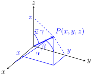
ផលគុណស្កាលៃនៃពីរវ៉ិចទ័រ \(\displaystyle \vec{u}\) និង \(\displaystyle \vec{v}\) ក្នុងលំហ គឺជាចំនួនពិត \(\displaystyle k\) មួយ ដែលកំណត់ដោយ៖
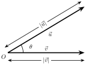
☞ ចំពោះគ្រប់វ៉ិចទ័រ \(\displaystyle \vec{u}\) , \(\displaystyle \vec{v}\) និង \(\displaystyle \vec{w}\) ៖
☞ ផលគុណស្កាលៃនៃពីរវ៉ិចទ័រអត្តកូណាល់គ្នា ឬ កែងគ្នា៖
ដែល \(\displaystyle (\vec{u} \neq \vec{0} , \vec{v} \neq \vec{0})\)
ពីរវ៉ិចទ័រ \(\displaystyle \vec{u} = (x, y, z)\) និង \(\displaystyle \vec{v} = (x', y', z')\) ស្ថិតក្នុងគោលអរតូណរម៉ាល់នៃលំហ គេបាន៖
គេមានចំណុច \(\displaystyle A(x_1, y_1, z_1)\) , \(\displaystyle B(x_2, y_2, z_2)\) គេបានចម្ងាយ ពី \(\displaystyle A\) ទៅ \(\displaystyle B\) គឺកំណត់ដោយ៖ \(\displaystyle d(A, B) = AB = |\vec{AB}|\)
\(\displaystyle = \sqrt{(x_2 - x_1)^2 + (y_2 - y_1)^2 + (z_2 - z_1)^2}\)
សមីការនៃស្វ៊ែរដែលមានផ្ចិតត្រង់ចំណុច \(\displaystyle (a, b, c)\) និង កាំ \(\displaystyle r\) គឺ ៖
\(\displaystyle \bullet\) សមីការបន្ទាត់ក្នុងលំហ
បើបន្ទាត់ \(\displaystyle L\) ស្របនឹងវ៉ិចទ័រ \(\displaystyle \vec{u}=(a,b,c)\) នោះ
បើ \(\displaystyle abc\neq0\) នោះសមីការឆ្លុះកំណត់ដោយ៖
\(\displaystyle \bullet\) ចម្ងាយពីចំណុចទៅបន្ទាត់
បើ \(\displaystyle P\) ជាចំណុចមួយលើ \(\displaystyle L\) និង \(\displaystyle \vec{u}\) ជាវ៉ិចទ័រប្រាប់ទិសនៃ \(\displaystyle L\) នោះ

\(\displaystyle \bullet\) សមីការប្លង់ និងចម្ងាយពីចំណុចទៅប្លង់
បើប្លង់ \(\displaystyle (\alpha)\) កាត់តាម \(\displaystyle P(x_0,y_0,z_0)\) នោះ
សមីការទូទៅ៖ \(\displaystyle ax+by+cz+d=0\)។
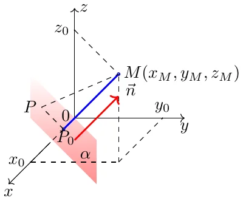
\(\displaystyle \bullet\) មុំរវាងប្លង់ពីរ
បើប្លង់ពីរមានវ៉ិចទ័រណរម៉ាល់ \(\displaystyle \vec{n}_1\) និង \(\displaystyle \vec{n}_2\) នោះ
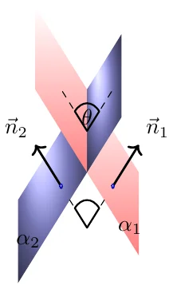
\(\displaystyle \bullet\) សមីការស្វ៊ែ
បើស៊្វែរ\(\displaystyle (S)\) មានផ្ចិត \(\displaystyle I=(a,b,c)\) និងកាំ \(\displaystyle R\) នោះ:
សមីការស្តង់ដា
សមីការទូទៅ
ទីតាំងរវាងស្វ៊ែ \(\displaystyle (S)\) និងប្លង់ \(\displaystyle (P)\)
បើស៊្វែរ \(\displaystyle (S)\) មានផ្ចិត \(\displaystyle I(x_0,y_0,z_0)\) និងកាំ \(\displaystyle R\) និងប្លង់ \(\displaystyle (\alpha):ax+by+cz+d=0\)
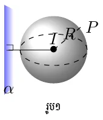


\(\displaystyle \bullet\) ចម្ងាយរវាងបន្ទាត់ពីរ
បន្ទាត់ \(\displaystyle L_1\) កាត់តាម \(\displaystyle M_1\) មានទិស \(\displaystyle \vec{u}_1\) និង \(\displaystyle L_2\) កាត់តាម \(\displaystyle M_2\) មានទិស \(\displaystyle \vec{u}_2\)។
បើបន្ទាត់ស្របគ្នា៖
បើបន្ទាត់មិនស្របគ្នា៖

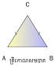
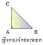

បង្ហាញថាជាចតុកោណកែង៖

បង្ហាញថា ការេ
បង្ហាញថា ចតុកោណស្មើ
ជ្រុងទាំងបួនមានប្រវែងស្មើគ្នា៖
ចំនួនកុំផ្លិច
វិធីចែកចំនួនកុំផ្លិច
ចំពោះ\(\displaystyle ~c+di\neq0~\)
គេមានចំនួនកុំផ្លិច\(\displaystyle ~z=a+bi~\)គេតាងម៉ូឌុលនៃ\(\displaystyle ~z~\)ដោយ\(\displaystyle ~|z|~\)កំណត់សរសេរដោយ
\(\displaystyle ~r=|z|=\sqrt{a^2+b^2}~\)។
បើ\(\displaystyle ~z~\)ជាចំនួនកុំផ្លិច នោះ\(\displaystyle ~|z|^2=z\cdot \overline{z}~\)។
បើ\(\displaystyle ~z~\)ជាចំនួនកុំផ្លិច នោះ\(\displaystyle ~|z|=|\overline{z}|=|-z|~\)។
បើ\(\displaystyle ~z~\)ជាចំនួនកុំផ្លិច នោះ\(\displaystyle ~|z_1\cdot z_2|=|z_1|\cdot |z_2|~\)។
បើ\(\displaystyle ~z~\)ជាចំនួនកុំផ្លិច នោះ\(\displaystyle ~\left|\dfrac{z_1}{z_2}\right|=\dfrac{|z_1|}{|z_2|}~\)។
ដើម្បីរកអាគុយម៉ង់នៃ \(\displaystyle z\) យើងត្រូវដោះស្រាយប្រព័ន្ធសមីការ \(\displaystyle \Biggl\{\begin{aligned}
\cos \varphi&=\dfrac{a}{r}\\
\sin \varphi&=\dfrac{b}{r}
\end{aligned}\) ដែល
\(\displaystyle r=\sqrt{a^2+b^2}\) និង \(\displaystyle \varphi\) ជាអាគុយម៉ង់នៃ\(\displaystyle ~z~\)។
ចំនួនកុំផ្លិច\(\displaystyle ~z=a+bi~\)អាចសរសេរជាទម្រង់ត្រីកោណមាត្រ \(\displaystyle ~z=r(\cos \theta+i\sin \theta)~\)។
បើ\(\displaystyle ~z_1=r_1(\cos \theta_1+i\sin \theta_1)~\) និង
\(\displaystyle ~z_2=r_2(\cos \theta_2+i\sin \theta_2)~\)
\(\displaystyle z_1 z_2=r_1r_2[\cos(\theta_1+\theta_2)+i\sin(\theta_1+\theta_2)]\)
បើគេមាន\(\displaystyle ~z_1=r_1(\cos\theta_1+i\sin\theta_1)~\)និង
\(\displaystyle ~z_2=r_2(\cos\theta_2+i\sin\theta_2)~\) ដែល\(\displaystyle ~z_2\neq0 ~\)
\(\displaystyle \dfrac{z_1}{z_2}=\dfrac{r_1}{r_2}[cos(\theta_1-\theta_2)+isin(\theta_1-\theta_2)]\)
បើ\(\displaystyle ~z=r(\cos \theta +i\sin \theta)~\) នោះ
\(\displaystyle ~z^n=r^n(\cos n\theta +i\sin n\theta)~\)គ្រប់\(\displaystyle ~n~\)ជាចំនួនគត់រុឺឡាទីបវិជ្ជមាន។ គេអាចទាញបាន
\(\displaystyle (\cos \theta+i\sin \theta)^n=\cos(n\theta)+i\sin(n\theta)\)
ហៅថារូបមន្តដឺម័រ។
បើ\(\displaystyle ~z=r(\cos \theta+i\sin \theta)~\)ជាចំនួនកុំផ្លិចមិនសូន្យ ហើយ\(\displaystyle ~n~\)ជាចំនួនគត់វិជ្ជមាន នោះ\(\displaystyle ~z~\)មាន\(\displaystyle ~n~\)ឫសទី\(\displaystyle ~n~\)កំណត់ដោយ
\(\displaystyle ~w_k=\sqrt[n]{r}\left[\cos\left(\dfrac{\theta+2k\pi}{n}\right)+i\sin\left(\dfrac{\theta+2k\pi}{n}\right)\right]~\)
ដែល\(\displaystyle ~k=0,1,2,3,\cdots,n-1~\)។